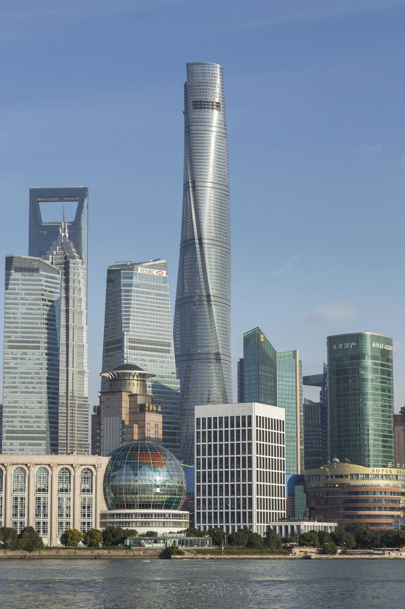
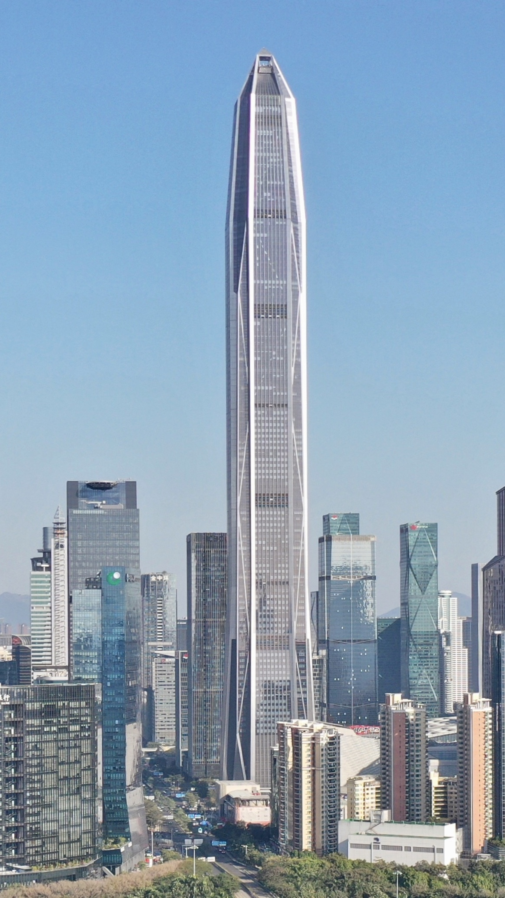
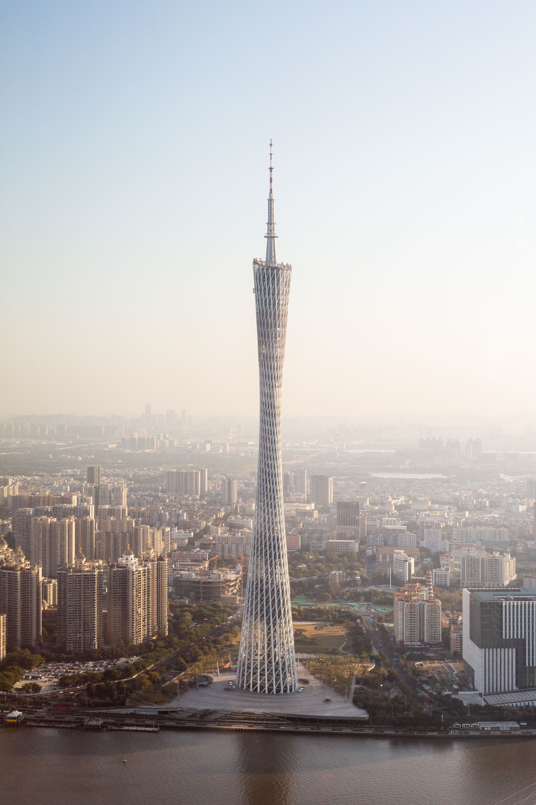
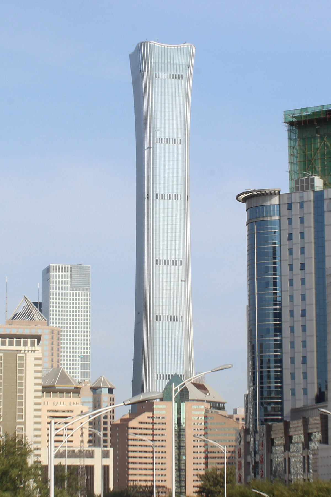
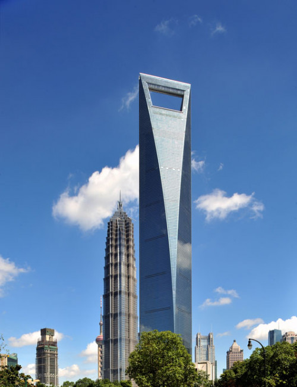
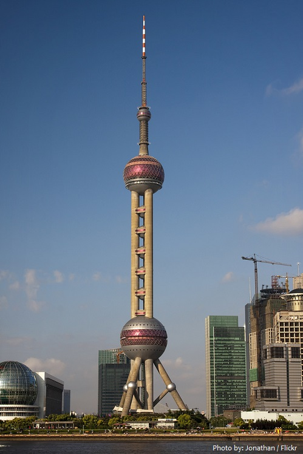

CHINA
1. Shanghai Tower
Shanghai Tower was built in the early 2015, since then it has been holding the crown of China's tallest building for more than 3 years. Now the observation deck on 118th floor of Shanghai Tower has become one of the most popular tourist attractions in Shanghai, it's the highest accessible point in the city, from there visitors can get the spectacular 360 degree aerial view of city of Shanghai.
2.Ping An Finance Center
Ping An Finance Center was initially designed to be 660 meters tall with the intention to make it the tallest skyscraper in the nation, there was a 60-meter spire at top in the original design, but in the later the spire was removed from the design when the tower was under construction and had been built to a height close to 600 meters, due to the concern on the security of a nearby airline.
3.Conton Tower
Canton Tower is the tallest structure in city of Guangzhou, it's also the tallest broadcasting tower in China and second tallest broadcasting tower in the world, only after Tokyo Skytree in Tokyo. The roof height of the tower is 454 meters.
4.China Zun Tower
China Zun Tower is the tallest building in the capital city of China, the building is located in the core area of the city's Central Business District, the formal name of the building is CITIC Plaza, it serves as the headquarters of CITIC Group, the name China Zun is more widely used, Zun is a sort of vessel used for containing wine in ancient China, it was Zun inspired the architects to come up the idea of the building's unique shape.
5.Shanghai World Financial Center
Shanghai World Financial Center is the second tallest building in Shanghai and was once the world's tallest building measured by roof height from 2008 to 2009. The building is one of the most distinctive buildings in Shanghai as the large aperture on the top makes the building appears like a bottle opener. The sky bridge above the large aperture contains an observation deck, which was highest in the world upon its opening in 2008.
6.Orienal Pearl Tower
Oriental Pearl Tower is a broadcasting & observation tower in Shanghai, it's one of the landmark buildings of Shanghai, and before the completion of SWFC in 2008, it had been the tallest structure in China. The observation decks are set inside the spheres of the tower, offering aerial views of the river and buildings on the sides of it, Oriental Pearl Tower is one of the most popular points of interest in Shanghai.
United Arab Emirates
1.The Burj Khalifa

Located in the vibrant community of Downtown Dubai, The Burj Khalifa is currently the tallest building in the world. The structure is a mixed-use development that features 163 floors. Completed in 2009, the design derives its form from the flower, Spider Lily. Apart from holding the title of the tallest tower in the world, it also holds records for the tallest free-standing structure, Dubai tallest building with the most floors, and the world’s highest elevator installation.
2.The Marina

The second Dubai tallest building i.e. the Marina 101 is located at the Marina waterfront. The 101-storey structure consists of several visual elements and projections that help break the monotony of the structure. The structure holds the title of the tallest residential tower, surpassing 432 Park Avenue by just 1m.
3.The Rose Rayhaan

The Rose Rayhaan, also known as Rose Tower is a 72 storey structure on the Sheikh Zayed Road. It held the title of the world’s tallest hotel from 2009-2012. The two cylindrical forms at the sides of the tower fold into one another and flatten at the top to form a peak of intersecting petals.
4.The Index

Situated in Dubai International Finance Center, the 80 storey structure was one of the first to make use of design principles to combat the surrounding environment.
UNITED KINGDOM
1. The Shard

The Shard,[a] also referred to as the Shard London Bridge[12] and formerly London Bridge Tower,[13] is a 72-storey mixed use development supertall skyscraper, designed by the Italian architect Renzo Piano, in Southwark, London, that forms part of The Shard Quarter development. Standing 309.6 metres (1,016 feet) high, The Shard is the tallest building in the United Kingdom, and the seventh-tallest building in Europe, the second-tallest outside Russia, only 40cm less than the Varso Tower in Warsaw.[14] It is also the second-tallest free-standing structure in the United Kingdom, after the concrete tower of the Emley Moor transmitting station. The Shard replaced Southwark Towers, a 24-storey office block built on the site in 1975.
2.The Leadenhall Street

122 Leadenhall Street, which is also known as the Leadenhall Building, is a 225-metre-tall (738 ft) skyscraper in central London. It opened in July 2014 and was designed by the Rogers Stirk Harbour + Partners; it is known informally as The Cheesegrater because of its distinctive wedge shape similar to that of the kitchen utensil with the same name.[5] It is one of numerous tall buildings recently completed or under construction in the City of London financial district, including 20 Fenchurch Street, 22 Bishopsgate and The Scalpel.
3.Hamptom Tower

Hampton Tower will reach a height of 214.5 m (704 ft); making it the second-tallest residential skyscraper currently proposed for London.[4][5] There will also be new public and retail space, cafés and restaurants as part of the scheme.[6]
4.The Heron Tower

Salesforce Tower, 110 Bishopsgate (formerly, and still commonly known as, Heron Tower) is a commercial skyscraper in London. It stands 230 metres (755 ft) tall[4] including its 28-metre (92 ft) mast making it the second tallest building in the City of London financial district[5] and the fifth tallest in Greater London and the United Kingdom, after the Shard in Southwark and One Canada Square at Canary Wharf. 110 Bishopsgate is located on Bishopsgate and is bordered by Camomile Street, Outwich Street and Houndsditch.
UNITED STATE
1.One World Trade Centre

First unveiled to the public in 2014, the One World Trade Centre was built in the same location as the former North Tower of the original Twin Towers World Trade Centre buildings destroyed during 9/11. With 94 floors that reach 1,776 feet into the sky, this commercial office building is now widely accepted as the tallest construction in the United States.
2.One Vanderbilt

New York’s One Vanderbilt opened in 2020, and its 93 floors soaring 1,401 feet into the sky immediately captured public attention. As well as hosting multiple commercial office spaces, the building is also something of a tourist attraction, with a vast observation deck, exhibition space and interactive visitor area housed on the 73rd floor.
3.432 Park Avenue

432 Park Avenue’s towering block of 104 private apartments opened in 2015. At 1,396 feet high, it immediately made the top ten tallest buildings in the U.S. list. Prices for these exclusive, private apartments run into tens of millions each, making them among the most elite properties in the entire country.
4.30 Hudson Yards

At 103 floors high and 1,296 feet in height, this impressive monolith has acted as host to some of the city’s most prestigious businesses, including CNN and Warner Bros since opening in 2019. The building is also a popular tourist attraction, featuring an observation deck with a transparent floor on the 100th level, and a futuristic bar and restaurant on the 101st floor.
5. Empire State Building

One of the city’s first true skyscrapers, the Art Deco masterpiece that is the Empire State Building still ranks in the top ten tallest buildings in the U.S., with its 102 floors reaching 1,250 feet into the sky. When it first opened in 1931, the Empire State Building captured public imagination around the world as the tallest building of all time, and it has remained a true icon of New York City ever since.
6.Steinway Tower

The official title for this marvel of architectural engineering is 111 West 57th Street, although it is more commonly known as the catchier Steinway Tower, referencing the famed Steinway & Sons piano store that sits at the skyscraper’s base. Once a leading center where musicians would congregate, Steinway’s dwindling business meant they had to sell off the land to the developers who planned the tower’s construction. With 84 floors at 1,428 feet high, Steinway Tower is the fourth tallest building in the U.S.